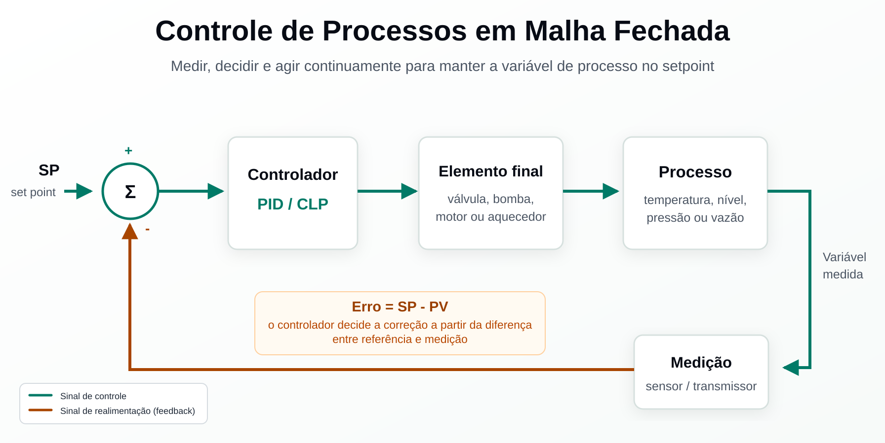

Sumário
- 1.1 O que é um processo?
- 1.2 O que é controle?
- 1.3 Por que precisamos de controle de processos?
- 1.3.1 Segurança e confiabilidade do processo

1.1 O que é um processo?
Um processo é qualquer operação ou sequência de operações que envolve uma mudança em uma substância sendo tratada.
Processos podem ser simples, como bombear água de um lugar para outro, ou altamente complexos, como derivar gasolina da mistura de substâncias químicas do petróleo bruto. Outros exemplos industriais incluem pasteurização de leite, produção de vacinas, britação de minérios e geração de energia a vapor.
Exemplos de processos por tipo de mudança:
Refino de petróleo, produção química, geração de energia, papel e celulose, alimentos e bebidas, farmacêutica, mineração e metalurgia.
Cada processo possui propriedades que podem variar: pressão, temperatura, nível, vazão, acidez, cor, viscosidade, entre outras. Cada uma dessas propriedades é chamada de variável de processo. Os valores dessas variáveis podem ser medidos e enviados remotamente por meio de sinais, sendo exibidos, registrados, tendenciados ou analisados.
1.2 O que é controle?
Controle significa determinar o comportamento ou supervisionar a operação de um processo. Todo controle envolve três etapas fundamentais: medição, decisão e ação.
As três etapas do controle (malha fechada):
Etapa 1: Medição
Realizada por instrumentos e analisadores. As medições mais comuns em plantas industriais são vazão, nível, pressão e temperatura. Outros instrumentos medem pH, composição química, umidade e cor. Analisadores são dispositivos mais complexos capazes de realizar análises multivariáveis do processo ou da qualidade do produto.
Etapa 2: Decisão
Realizada por alguma forma de controlador ou sistema de controle. Em plantas industriais de grande porte, centenas ou milhares de variáveis precisam ser controladas simultaneamente. Para isso são utilizados:
- CLPs (Controladores Lógicos Programáveis) - lógica discreta e sequenciamento
- SDCDs (Sistemas Digitais de Controle Distribuído) - controle contínuo e avançado
- Controladores híbridos - combinação das duas arquiteturas
Etapa 3: Ação
Executada pelo elemento final de controle. Quando o controlador decide realizar uma correção no processo, é o elemento final que efetivamente a executa. Exemplos: válvulas de controle, aquecedores elétricos, motores com inversores de frequência e bombas de dosagem.
Quando o elemento final faz um ajuste, o processo muda. Uma nova medição é tomada, uma nova decisão é feita e o elemento final se move novamente. Esse loop se repete continuamente, às vezes muitas vezes por segundo.
Exemplos práticos de malhas de controle:
1.3 Por que precisamos de controle de processos?
Processos industriais podem ser grandes, complexos e frequentemente perigosos. Plantas com produtos químicos inflamáveis, corrosivos ou explosivos são operadas por um número reduzido de operadores. O controle automatizado de processos permite que o operador supervisione e gerencie eficazmente essa complexidade.
Funções do sistema de controle para o operador:
O controle automatizado reduz as demandas físicas e cognitivas dos operadores, além dos requisitos de pessoal. Garante que o processo opere de forma segura, eficaz e eficiente.
1.3.1 Segurança e confiabilidade do processo
Acima de tudo, o sistema de controle de processos deve garantir que o processo opere de forma segura e confiável.
Quando um processo industrial falha em operar com segurança e confiabilidade, as consequências podem ser catastróficas. A planta e seu sistema de controle são projetados para reduzir riscos de ferimentos, fatalidades e danos a equipamentos, tanto a curto quanto a longo prazo. A instrumentação e o sistema de controle desempenham papel crítico na prevenção e gerenciamento de perturbações operacionais.
Confiabilidade
Em contexto industrial, confiabilidade refere-se à capacidade do processo de operar em sua taxa plena de produção sem perdas causadas por reduções de ritmo ou paradas. As paradas podem ser planejadas ou não planejadas, frequentemente causadas por danos ou falhas em equipamentos.
Exemplo: caldeira a vapor
Mesmo um processo simples como uma caldeira requer bom controle para manter a confiabilidade de longo prazo. A água de alimentação deve ter pureza muito elevada, próxima à água destilada, para:
- Reduzir a corrosão dos tubos do gerador de vapor
- Evitar a formação de incrustações (depósitos minerais internos nos tubos)
- Prevenir vazamentos por adelgaçamento das paredes dos tubos
- Manter a eficiência de transferência de calor e reduzir o consumo de combustível
Analisadores químicos contínuos são rotineiramente utilizados para manter a pureza adequada da água de alimentação e proteger o gerador.
A segurança funcional de sistemas de controle de processos é regulamentada pela IEC 61511 (indústria de processos) e IEC 61508 (base geral). Conceitos como SIL (Safety Integrity Level) e SIS (Safety Instrumented System) derivam diretamente desses princípios.